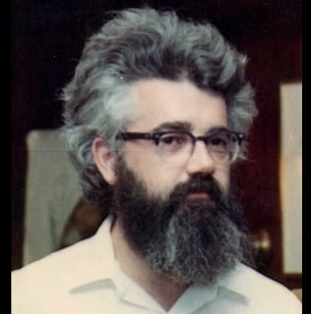
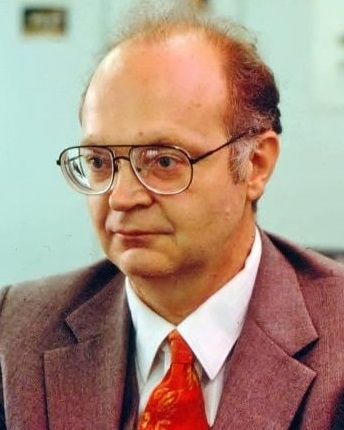
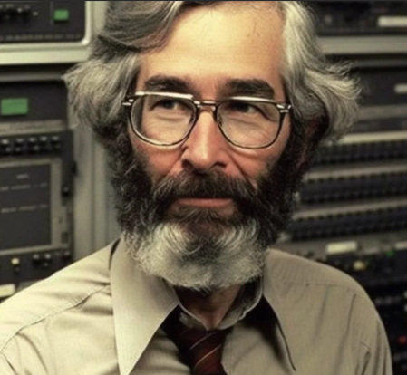
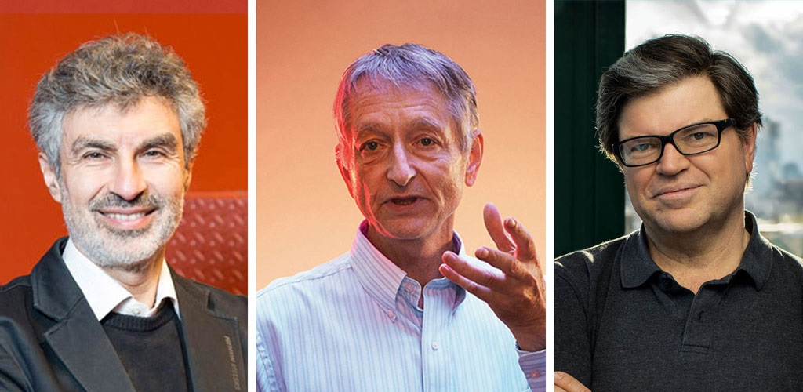
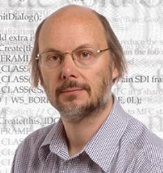

محمود امین طوسی
دانشیار علوم کامپیوتر
دانشگاه فردوسی مشهد
| علوم کامپیوتر (CS) | مهندسی کامپیوتر (CE) |
|---|---|
| الگوریتمها، نظریه محاسبه، ریاضی، هوش مصنوعی | طراحی نرمافزار، سختافزار، برنامهنویسی، شبکه، هوش مصنوعی |
| تصویر | نام | شهرت | دستهبندی غالب |
|---|---|---|---|
|  | John McCarthy | هوش مصنوعی CACM (2012) | Computer Scientist |
|  | Donald Knuth | کتاب «هنر برنامهنویسی رایانه»، الگوریتمها | Computer Scientist |
|  | Leslie Lamport | LaTeX، الگوریتمهای توزیعشده | Computer Scientist |
| Marvin Minsky | نقش وی در هوش مصنوعی | Computer Scientist | |
|  |
Y. Bengio G. Hinton Y. LeCun |
یادگیری عمیق CACM (2019) | Computer Scientist |
| Richard Stallman | بنیانگذار جنبش نرمافزار آزاد ، پروژه GNU، مجوز GPL | Programmer / Free Software Activist | |
| Linus Torvalds | سیستمعامل لینوکس، Git | Software Engineer |
|  | Bjarne Stroustrup | خالق زبان ++C | Computer Scientist / Software Engineer |
| James Gosling | خالق زبان Java | Computer Scientist | |
| Guido van Rossum | خالق زبان پایتون | Computer programmer |
خب، نویسندهی کتابی که شما میخوانید مطلقاً هیچ مخالفتی با کار مفید و پیشرفت بشر ندارد. اما او قویاً معتقد است که کتابی مانند این باید بر روشهای حل مسئله، همراه با ایدهها و مدلهای ریاضی که به حل بسیاری از مسائل مختلف کمک میکنند، تأکید کند، نه اینکه بر دلایل مفید بودن این روشها و مدلها تمرکز کند. ما روشهای زیبا و قدرتمند بسیاری برای حل مسائل ترکیبی یاد خواهیم گرفت و ظرافت این روشها انگیزهی اصلی ما برای مطالعهی آنها خواهد بود.
سوالی هست؟
منابع بیشتر: